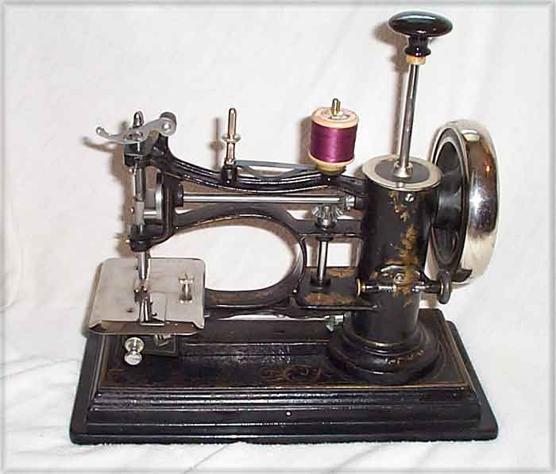
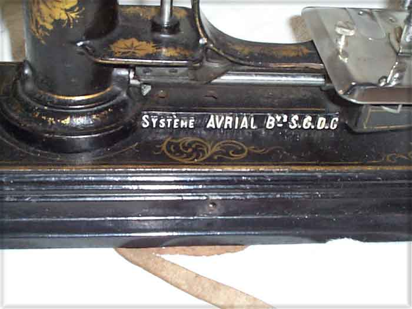
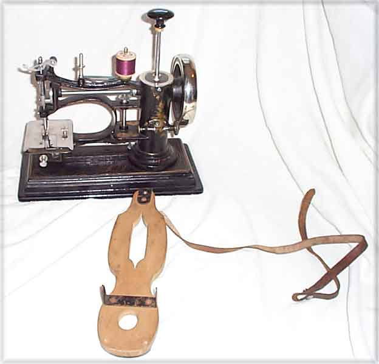
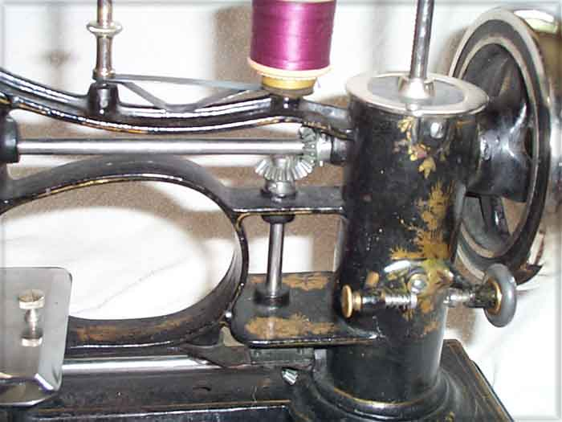
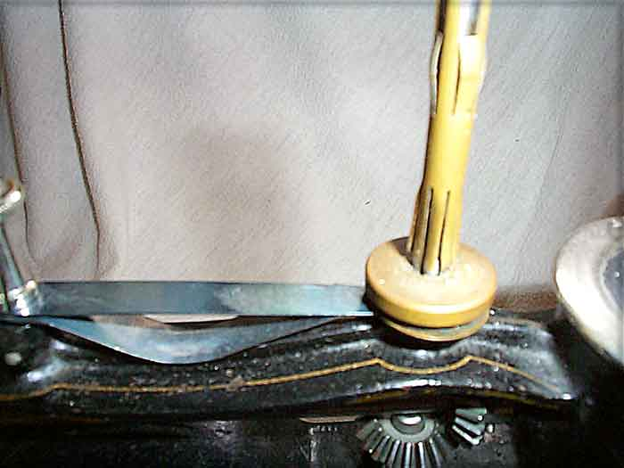
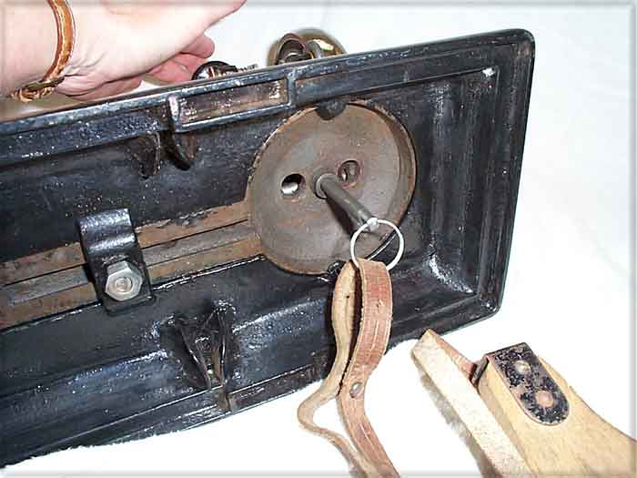

THE NEEDLEBAR
Augustin Avrial & Lucien Deslinières
Rue de l'Universtié 183, Paris
La Populaire
Hand or foot-driven chainstitch machine
(1894 -97)
Pictures courtesy of Linda Wray
Front View

Close-up of Base

Machine and Foot Pedal

Upper Drive Shaft

Spool Pin & Upper
Tension

Under View

© Alan
Quinn 2004
This page may
not be reproduced or distributed in part or in whole without the prior written
permission of the copyright owner